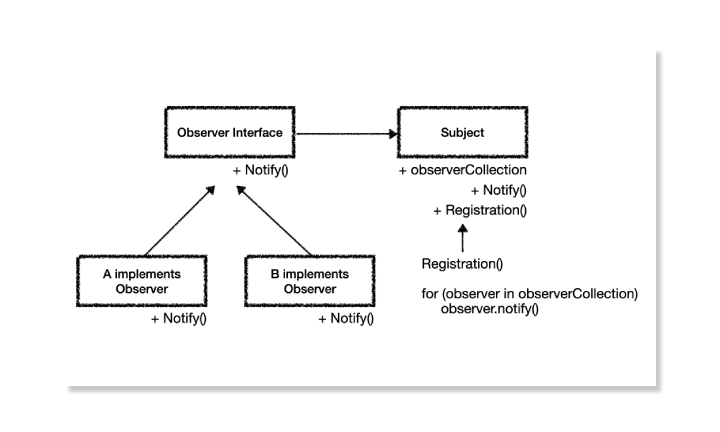

TypeScript 디자인 패턴 - 옵저버 패턴

옵저버 패턴이란
설계 문제에 대해서 해답을 문서화 해놓은 디자인 패턴에는 생성, 구조, 행동, 동시실행과 같은 분류가 있습니다. 그 중에서 옵저버 패턴은 행동과 관련된 디자인 패턴입니다.
옵저버 패턴은 감지할 객체의 클래스에 옵저버 인터페이스를 주고, 만든 객체를 옵저버 서버에 등록하여 옵저버 서버에서 함수를 호출해 인터페이스에 대응하는 함수를 실행합니다.
이 패턴은 개방 폐쇄 원칙을 지키게 도와주며, 캡슐화가 잘 된 객체를 만들 수 있도록 도와줍니다.
옵저버 패턴
아래의 코드는 React Observer Pattern Use TypeScript에서 보실 수 있습니다.

(그림 1: 옵저버 패턴의 구상도)
옵저버 패턴은 Observer Interface를 옵저빙할 객체에 상속하는 형태로 구현합니다. 그렇게 상속받은 객체를 배열로 저장해서 배열에서 For Loop를 돌려 모두에게 이벤트를 전파하는 방식입니다.
그렇다면 이 옵저버 패턴을 어디에 적용할 수 있을까요? 조금 억지스러운 감이 있지만, TodoList가 여러개 있을때 한번에 모든 Todo List의 Todo를 한개씩 생성하거나, 모든 Todo를 삭제하는 행동을 옵저버 패턴으로 구현할 수 있습니다.

(그림 2: 옵저버 패턴을 적용해 전체 추가와 전체 삭제 기능을 구현)
그림에 나오는 것처럼 옵저버 패턴을 적용해서 구현을 해보겠습니다.
모델 구현
옵저버 패턴을 적용하기 전에, 프로젝트에 쓰일 추상화된 모델을 구현합시다. 프로젝트가 커져감에따라 객체지향 형태로 추상화해서 모델을 만드는 것은 필요합니다.
Observer.ts
export interface IObserver {
notifyAddTodo(message: string): void
notifyRemoveTodo(): void
}
export class Subject {
private observerCollection: IObserver[]
constructor() {
this.observerCollection = []
}
registration(observer: IObserver) {
this.observerCollection.push(observer)
}
notifyAddTodo(message: string) {
this.observerCollection.forEach((observer) => {
observer.notifyAddTodo(message)
})
}
notifyRemoveTodo() {
this.observerCollection.forEach((observer) => {
observer.notifyRemoveTodo()
})
}
}먼저, 오늘의 주인공 Observer 입니다. Observer Interface에서는 이벤트 함수를 들고 있습니다. Todo를 모두 추가하거나 삭제하기 위한 이벤트 입니다. 이제 이 인터페이스는 객체에 적절히 추가될 것 입니다.
Subject 클래스는 IObserver Interface를 구현한 객체를 담는 배열을 들고 있고, 해당 이벤트를 발생시키기 위한 함수가 있습니다. Subject에서 notifyAddTodo, notifyRemoveTodo를 실행하면 배열을 돌면서 observerCollection에 있는 객체의 함수를 실행하게 됩니다.
Observer Collection에 Observer 객체를 등록시킬때는 registration 함수를 사용하여 등록합니다.
src/models/Removable
export enum RemoveState {
IDLE = 0,
REMOVE
}
export interface IRemovable {
getRemoveState(): RemoveState
remove(): void
}Removable은 상태에 대한 enum 값과, 삭제가능한 객체인지를 알려주는 Interface로 구성됩니다. Removable을 구현하는 클래스는 느슨한 결합으로 쉽게 추가하고 붙일 수 있습니다.
Todo.ts
import { IRemovable, RemoveState } from "./Removable"
class Todo implements IRemovable {
private removeState: RemoveState
private readonly message: string
constructor(message: string) {
this.removeState = RemoveState.IDLE
this.message = message
this.remove = this.remove.bind(this)
}
getMessage() {
return this.message
}
getRemoveState() {
return this.removeState
}
remove() {
if (this.removeState !== RemoveState.REMOVE)
this.removeState = RemoveState.REMOVE
}
}
export default TodoTodo 객체를 추상화한 Todo 클래스는 삭제상태와 메시지를 멤버 변수로 갖고 있습니다. 캡슐화를 완성하기 위해서 멤버변수는 은닉화를 해주었고, 외부 진입에 대해서 한정적이게 하도록 get 함수로 외부로의 연결통로를 두었습니다.
TodoList.ts
import Todo from "./Todo"
import { RemoveState, IRemovable } from './Removable'
import { IObserver } from './Observer'
class TodoList implements IRemovable, IObserver {
private readonly todos: Todo[]
private removeState: RemoveState
constructor() {
this.todos = [new Todo('테스트')]
this.removeState = RemoveState.IDLE
this.add = this.add.bind(this)
this.remove = this.remove.bind(this)
this.notifyAddTodo = this.notifyAddTodo.bind(this)
this.notifyRemoveTodo = this.notifyRemoveTodo.bind(this)
}
getTodos() {
return this.todos.filter((todo) => todo.getRemoveState() !== RemoveState.REMOVE)
}
add(message: string) {
this.todos.push(new Todo(message))
}
remove() {
if (this.removeState !== RemoveState.REMOVE)
this.removeState = RemoveState.REMOVE
}
getRemoveState() {
return this.removeState
}
notifyAddTodo(message: string) {
this.add(message)
}
notifyRemoveTodo() {
this.todos.forEach((todo) => {
todo.remove()
})
}
}
export default TodoListTodoList는 Subject에서 제공한 함수를 동작시키기 위해 Observer Interface를 구현합니다. 그래서 이 TodoList를 받아, Observer Collection에서 동작시킬 것 입니다.
React component, hooks 구현
이제 이 모델을 사용해야하는데 React와 객체지향 모델과의 결합을 하는 예제는 많지 않기 때문에 생소할 수 있습니다. 그래서, 최근 가장 많이 사용한다는 hooks와 functional component 형태로 제작해보겠습니다.
src/hooks/useTodo.tsx
import { useState } from 'react'
import TodoList from '../models/TodoList'
import { Subject } from '../models/Observer'
const subject = new Subject()
function useTodo() {
const [todoListCollection, setTodoListCollection] = useState<TodoList[]>([])
const reRender = (other: TodoList[] = []) => {
setTodoListCollection(
[...todoListCollection, ...other]
)
}
const addTodoList = () => {
const todoList = new TodoList()
reRender([todoList])
subject.registration(todoList)
}
const addTodo = (TodoList: TodoList, message: string) => {
TodoList.add(message)
reRender()
}
const allAddTodo = (message: string) => {
subject.notifyAddTodo(message)
reRender()
}
const allRemoveTodo = () => {
if (window.confirm('정말 삭제하시겠습니까?')) {
subject.notifyRemoveTodo()
reRender()
}
}
return {
todoListCollection,
addTodoList,
addTodo,
allAddTodo,
allRemoveTodo
}
}
export default useTodocustom hook인 useTodo 입니다. 모델과 대응되고 있으며, 모델의 코드를 프론트에 제공해주기 위해 리액트 코드로 변환하는 과정입니다.
- Subject를 받아 hooks 밖에 생성을 합니다. hooks 밖에 생성하는 이유는 컴포넌트가 렌더 될 때마다 새로 custom hooks를 호출하기 때문에 hooks안에 넣으면 계속 동적할당하여 초기화합니다.
- custom hooks의 todoListCollection을 useState로 상태를 만듭니다. 상태의 타입은 모델이므로 TodoList[]로 지정합니다.
- reRender 함수는 shallow copy를 통해 React Component가 재랜더링 할 수 있도록 도와주는 함수입니다.
- addTodoList 함수는 TodoList 모델을 생성하면서 registration으로 Subject에 등록합니다.
- addTodo 함수는 해당 TodoList에 todo를 추가합니다.
- allAddTodo, allRemoveTodo는 subject에 이벤트를 보내고 재랜더링합니다.
그리고 상태와 함수를 추출하여 밖으로 내보냅니다.
src/components/Todo.tsx
import React from 'react'
import '../App.css'
interface IProps {
message: string
}
const Todo: React.FC<IProps> = ({ message }) => {
return <div className="todo">
{message}
</div>
}
export default TodoTodo Component는 간단하게 message만 prop으로 받아서 렌더링을 해줍니다.
src/components/Todos.tsx
import React from 'react'
import '../App.css'
import TodoList from '../models/TodoList'
import Todo from './Todo'
import { convertNumberToKorean } from '../utils'
interface IProps {
todos: TodoList
index: number
addTodo(TodoList: TodoList, message: string): void
}
const Todos: React.FC<IProps> = ({ todos, index, addTodo }) => {
return (
<div className="todos">
<h1 className="todos-title">{convertNumberToKorean(index)}</h1>
<div className="todos-wrapper">
{todos.getTodos().map((todo, idx) => <Todo message={todo.getMessage()} key={idx} />)}
</div>
<button className="button bottom-absolute" onClick={
() => { addTodo(todos, `${todos.getTodos().length} 번째 테스트`) }
}>+</button>
</div>
)
}
export default TodosTodos에서는 TodoList 모델을 받아서 렌더링 해줍니다.
- index를 받는 이유는 실행하고 하나, 둘, 셋 등의 한국말로 텍스트를 띄워주기 위해 index 번호를 받습니다.
- addTodo는 추가 된 후 렌더링을 해주어야 하므로 hooks에서 만든 함수를 Prop Drilling 으로 내려줍니다.
- convertNumberToKorean은 하나, 둘, 셋 과 같이 한글 숫자로 번역해주도록 만든 함수입니다.
App 적용
App에서 실제로 적용해줍니다.
import React, { useEffect } from 'react'
import './App.css'
import useTodo from './hooks/useTodo'
import Todos from './components/Todos'
const App = () => {
const { todoListCollection, addTodoList, addTodo, allAddTodo, allRemoveTodo } = useTodo()
useEffect(() => {
addTodoList()
}, [])
return (
<div id="app">
<div className="collection">
{todoListCollection.map((todoList, index) => (
<Todos todos={todoList} index={index + 1} addTodo={addTodo} key={index} />
))}
</div>
<div>
<button className="button" onClick={addTodoList}>콜렉션 추가</button>
<button className="button" onClick={() => { allAddTodo('전체 추가') }}>전체 추가</button>
<button className="button" onClick={() => { allRemoveTodo() }}>전체 삭제</button>
</div>
</div>
)
}
export default App실행
실행을 해보면 전체 추가, 삭제가 제대로 동작하는 걸 볼 수 있습니다.
결론
옵저버 패턴을 사용하면 모델 내에서 해당 이벤트에 대한 처리를 할 수 있으므로 레거시 로직이 아닌, 기능상의 로직으로 모델에 남을 수 있습니다.
또, Subject에서 이벤트를 관리할 수 있으며 EventDispatcher를 만들어 서버 로그 및 서버 통신에 대한 결과값을 가공하는 형태로도 작성할 수 있습니다.